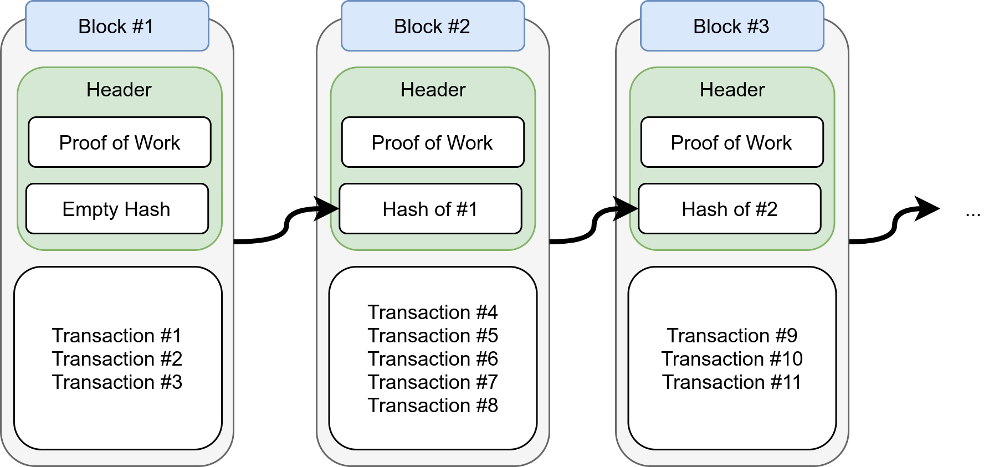
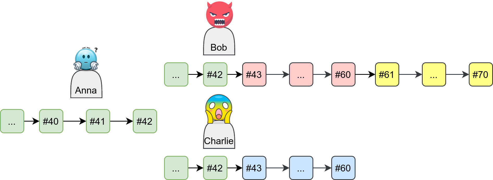

{kind=link}
Bitcoin and Ethereum made it to the news in 2021 due to all-time high price records. People know that they somehow are related to “the blockchain”, but very often the knowledge is rather fuzzy. During the onboarding process at my new job at Cashlink, I’ve participated in several learning sessions given by Niklas Baumstark which sharpened my knowledge.
After reading this article, you will know the basic terminology and be able to set the concepts into context.
This article will not go into different use cases of blockchains. If you’re looking for that, please read:
Transactions
A transaction (short: TX) consists of one or more operations, security features, fees, and time bounds.
The operations can be anything, but a coin/token transfer is the most typical one. In Ethereum, a smart contract call would be another type of operation.
One of the security features is a cryptographic nonce — number used only once. The nonce prevents the same transaction from being executed multiple times. If your transaction is “pay 10 EUR to Kevin” you would not want Kevin to repeatedly execute that transaction. The nonce makes sure it doesn’t happen. This nonce is typically a sequence number, meaning that you just count up the number.
Another security feature is a digital signature. The creator of the transaction signs the complete transaction and adds the signature to it. This way, everybody knows who the author is. This means one can ensure that the operation is permitted, e.g. for a token transfer that the creator of the transfer is the current holder of the token.
Fees are another important part of transactions. Operating the network isn’t for free and the capacity to add transactions is limited. By allowing people to add fees to the transactions, they can be more certain that their transactions will pass.
Lastly, there are time bounds. In Bitcoin, this is called “lock time”. By setting this parameter, the transaction can only be added after a certain time. One could also imagine that one can only add the transaction before a given time.
If you’re interested in what exactly Bitcoin transactions look like, please read:
The Bitcoin Script Language An elegant solution to change managementbetterprogramming.pub
Blocks
Several transactions are combined into one block. Each block consists of a header and a list of transactions. The header of each block contains the hash of the previous block. This reference to the previous block creates the chain. The header also contains additional information, e.g. the “proof of work” in some blockchains like Bitcoin.
{kind=link}

The first block cannot reference any block before. It is called the Genesis block. There is no inherent property of that block, but to make sure you’re on the right chain you have to have the same genesis block as all others.
You might wonder what the proof of work part actually is. It’s a specific example of a “consensus algorithm”.
Consensus algorithms
Why did we create blocks? Couldn’t we simply validate each transaction and make a list of transactions?
In principle, yes, that would be possible. However, adding a new block to the blockchain causes a significant amount of work. We need to make sure that everybody chooses the same block to add next. Otherwise, you would get a fork:
{kind=link}

Forking can be used for attacks, but it also occurs naturally. Communication over the network is not instantaneous. This means the different copies of the blockchain will diverge naturally. The consensus algorithm makes sure that they only diverge temporarily and agree on “the right” blockchain.
A well-known consensus algorithm is proof of work as used by Bitcoin (and by Ethereum until it switched to proof of stake in September 2022, see The Merge), but proof of stake and several others exist as well.
Proof of work is where you have workers mining coins and how you get the high energy consumption. It’s a process designed to be hard to make sure that the network can agree on the correct blockchain.
The network: Protocols, nodes, and networks
Bitcoin, Ethereum, and others define protocols. Protocols specify ways in which computers can communicate.
When computers speak the same protocol and are connected, they form a network. Each computer in that network is called a node.
If they have the same blocks, they have the same blockchain. There could be several different blockchains for one protocol, for example, Ethereum Classic (ETC) and Ethereum (ETH). One network should always use the same protocol and work on the same blockchain.
Who participates in the network?
A full node has a full copy of the blockchain. That means the node has all transactions completely. It can validate all blocks starting from the genesis block.
There are mining nodes (short: “miners”) that create new blocks in proof-of-work blockchains and validation nodes (short: “validators”) in proof-of-stake blockchains. The mining nodes often run on specialized machines (GPU, ASICs) and invest a lot of energy. The validators directly stake a part of their money to be validators. Both of them do it for profit: The protocols typically give them incentives to do the work and adding transactions to a block is incentivized by fees they can collect.
Archive nodes store even more data than the full nodes. They store everything a full node has, but also snapshots of the state from previous blocks. This way they can query balances from earlier states easier.
In contrast, light nodes try to keep the burden low. They are meant to be run on normal hardware as part of a wallet and need to connect to full nodes to submit transactions.